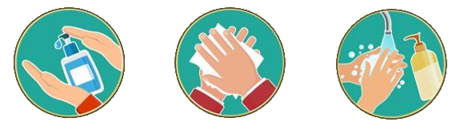
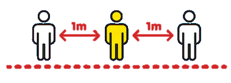
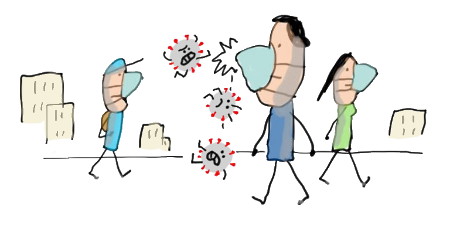
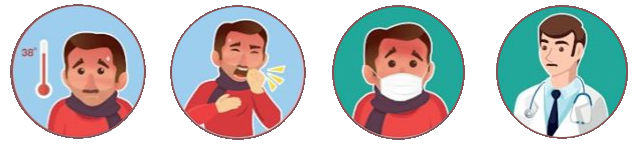
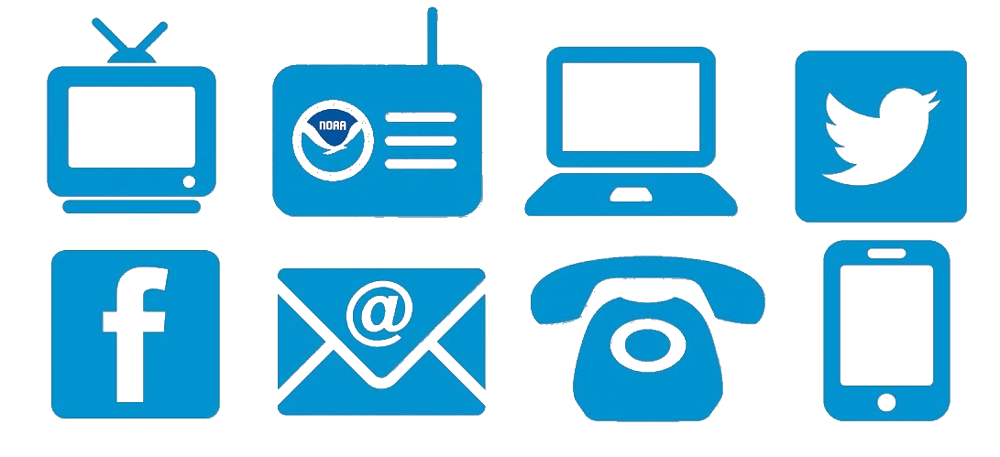
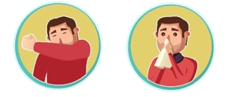
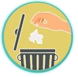

What is CORONAVIRUS
it's a virus of course what a dumb question and why are you even here
go and read somthing useful
HERE
...
Protect yourself and others
Take care of your health and protect others by doing the following:
Wash your hands frequently
Regularly and thoroughly clean your hands with an alcohol-based hand rub or wash them with soap and water.
- Why?
Washing your hands with soap and water or using alcohol-based hand rub kills viruses that may be on your hands.
 Maintain social distancing
Maintain at least 1 metre (3 feet) distance between yourself and anyone who is coughing or sneezing.
- Why?
When someone coughs or sneezes they spray small liquid droplets from their nose or mouth which may contain virus. If you are too close, you can breathe in the droplets, including the COVID-19 virus if the person coughing has the disease.
 Avoid touching eyes, nose and mouth
- Why?
Hands touch many surfaces and can pick up viruses. Once contaminated, hands can transfer the virus to your eyes, nose or mouth. From there, the virus can enter your body and can make you sick.

Practice respiratory hygiene
Make sure you, and the people around you, follow good respiratory hygiene. This means covering your mouth and nose with your bent elbow or tissue when you cough or sneeze. Then dispose of the used tissue immediately.
- Why?
Droplets spread virus. By following good respiratory hygiene you protect the people around you from viruses such as cold, flu and COVID-19
 If you have fever, cough and difficulty breathing, seek medical care early
Stay home if you feel unwell. If you have a fever, cough and difficulty breathing, seek medical attention and call in advance. Follow the directions of your local health authority.
- Why?
National and local authorities will have the most up to date information on the situation in your area. Calling in advance will allow your health care provider to quickly direct you to the right health facility. This will also protect you and help prevent spread of viruses and other infections.
 Stay informed and follow advice given by your healthcare provider
Stay informed on the latest developments about COVID-19. Follow advice given by your healthcare provider, your national and local public health authority or your employer on how to protect yourself and others from COVID-19.
- Why?
National and local authorities will have the most up to date information on whether COVID-19 is spreading in your area. They are best placed to advise on what people in your area should be doing to protect themselves.

When i wash my hands ?
- After coughing or sneezing.
- When caring for the sick.
- Before,during and after you prepare food.
- Before eating.
- After toilet use.
- When hands are visibly dirty.
- After handlind animals or animal waste.
Symptoms
Common symptoms include:- fever
- tiredness
- dry cough.
- shortness of breath
- aches and pains
- sore throat
- and very few people will report diarrhoea, nausea or a runny nose.
People with fever, cough or difficulty breathing should call their doctor and seek medical attention.
Things to do at home
-
first of all staghfar w d3i, chwiya religion ya 3abd rabi
Fun activities :
- PLAY VIDEO GAME :
If you don't have a gaming console, try some of the fun new games that are added every where every day (play/app store). - Put together an epic puzzle :
When you've got lots of time on your hands, get your hands busy. It'll take your mind off boredom, and completing a big puzzle feels great. - Call a friend :
If you're usually a text person, pick up the phone or video call a faraway friend. The extra connection really makes you feel closer. - Get a workout in :
You don't need a gym membership to sweat it out. Pull on your favorite leggings, choose a workout app, and get your blood moving. - Try a new recipe :
Stop opening and closing the fridge hoping new snacks will magically appear. Take matters into your own hand and make your own tasty dish. - Start a new book :
If you've run through your TV queue, go analog. Try one of the best books of the year to transport yourself to another world. - Learn a new language :
As our brains work out the meaning, endeavoring to communicate, we develop key learning skills such as cognitive thinking and problem-solving - Try new genre movie :
Who knows maybe you'll add a new genre to your favorit list. Organizing activities :
- Clean out your closet :
Go through your clothes to rediscover some old favs. If you haven't worn it in the past year, donated to poor people . - Shine the windows :
You'll be amazed how much brighter things look with sparkling clean windows. - Give an old piece new life :
Maybe you've got an old chair that never quite fit, or odds n' ends that could become something else. Go ahead, DIY it.
Creative activities :
Infected people
JUST PRAY WELL BRO/SIS :D
also read this :D
- When coughing and sneezing cover mouth and nose with flexed elbow or tissue.
 - Throw tissue into closed bin immediately after use.
 - Avoid close contact and stay home and call 3030.
- Seek medical care early and share previous travel history with your health care provider.
BE KIND
- Show empathy with those effected.
- Encourage them to keep doing what they enjoy.
- it's true that we should stay at home, but don't forget there is some pepole can't eat if they don't get out and work , so my dear reader if you can, then help ^^ .
- Stay at home by Amine Khatir